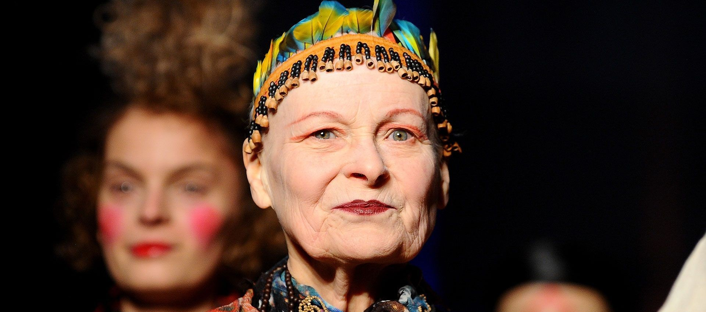

Vivienne Westwood
Icono del movimiento punk y una de las diseñadoras más influyentes del mundo. Su estilo combina rebeldía, cultura británica y crítica social.
Obras Destacadas
- "Pirate Collection" – Revolución estética inspirada en el estilo pirata (1981)
- "Punk Couture" – Propuesta estilística que redefinió la moda punk
- "Anglomania" – Fusión provocadora de tradición y modernidad británica